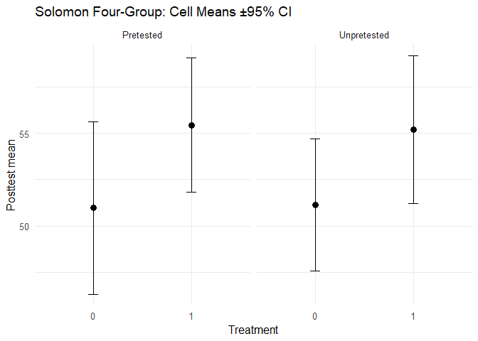

Analyze Solomon Four-Group designs using classic and modern methods (GLM, robust SEs, permutation, effect sizes).
solomonR
Tools to analyze Solomon Four-Group Designs (SFGD) with both the classic teaching workflow and a modern unified GLM: - Classic flow: 2×2 posttest ANOVA → (if no sensitization) ANCOVA on pretested cells + posttest-only t, optional Stouffer combine (Braver & Braver, 1988).
- Modern flow: one GLM with robust SEs + key contrasts, permutation p-values, effect sizes, and diagnostic helpers.
Installation
# install.packages("pak")
pak::pak("JUhalt/solomonR")
#> ℹ Loading metadata database✔ Loading metadata database ... done
#>
#> ℹ No downloads are needed
#> ✔ 1 pkg + 46 deps: kept 46 [9s]Quick Start
library(solomonR)
set.seed(1)
n <- 20
pretested <- c(rep(1, 2*n), rep(0, 2*n))
treat <- c(rep(1,n), rep(0,n), rep(1,n), rep(0,n))
y_pre <- c(rnorm(n, 50,10), rnorm(n, 50,10), rep(NA, 2*n))
# Data-generating process: treatment bumps posttest by 0.4 SD
eps <- rnorm(4*n, 0, 10)
y_post <- 50 + 0.5*ifelse(pretested==1 & !is.na(y_pre), scale(y_pre), 0) + 4*treat + eps
# Modern unified GLM
fit_g <- fit_solomon_glm(y = y_post, treat = treat, pretested = pretested, pretest_score = y_pre)
print(fit_g) # t.test/ANOVA-like summary with key contrasts
#> Solomon GLM (unified model)
#> Formula: y ~ treat * pretested + pre_obs
#> <environment: 0x0000023022334580>
#>
#> Coefficients (robust SEs):
#> term estimate std.error statistic p.value
#> (Intercept) 51.138 2.000 25.563 3.89e-144
#> treat 4.060 2.829 1.435 1.51e-01
#> pretested -14.991 8.598 -1.744 8.12e-02
#> pre_obs 0.297 0.163 1.825 6.81e-02
#> treat:pretested -0.163 4.014 -0.041 9.68e-01
#>
#> Key contrasts:
#> contrast estimate std.error statistic p.value
#> ATE (avg over pretest) 4.06 2.829 1.435 1.51e-01
#> Pretest x Treatment 4.06 2.829 1.435 1.51e-01
#> Pretest x Treatment 3.06 2.829 1.082 2.79e-01
#> Pretest x Treatment 2.06 2.829 0.728 4.66e-01
#> Pretest x Treatment 1.06 2.829 0.375 7.08e-01
#> Pretest x Treatment 0.06 2.829 0.021 9.83e-01
#> Pretest x Treatment -0.94 2.829 -0.332 7.40e-01
#> Pretest x Treatment -1.94 2.829 -0.686 4.93e-01
#> Pretest x Treatment -2.94 2.829 -1.039 2.99e-01
#> Pretest x Treatment -3.94 2.829 -1.393 1.64e-01
#> Pretest x Treatment -4.94 2.829 -1.746 8.08e-02
#> Pretest x Treatment -5.94 2.829 -2.100 3.58e-02
#> Pretest x Treatment -6.94 2.829 -2.453 1.42e-02
#> Pretest x Treatment -7.94 2.829 -2.807 5.01e-03
#> Pretest x Treatment -8.94 2.829 -3.160 1.58e-03
#> Pretest x Treatment -9.94 2.829 -3.513 4.42e-04
#> Pretest x Treatment -10.94 2.829 -3.867 1.10e-04
#> Pretest x Treatment -11.94 2.829 -4.220 2.44e-05
#> Pretest x Treatment -12.94 2.829 -4.574 4.79e-06
#> Pretest x Treatment -13.94 2.829 -4.927 8.33e-07
#> Pretest x Treatment -14.94 2.829 -5.281 1.29e-07
#> Treatment | pretested 8.12 5.658 1.435 1.51e-01
#> Treatment | pretested 7.12 5.658 1.258 2.08e-01
#> Treatment | pretested 6.12 5.658 1.082 2.79e-01
#> Treatment | pretested 5.12 5.658 0.905 3.65e-01
#> Treatment | pretested 4.12 5.658 0.728 4.66e-01
#> Treatment | pretested 3.12 5.658 0.551 5.81e-01
#> Treatment | pretested 2.12 5.658 0.375 7.08e-01
#> Treatment | pretested 1.12 5.658 0.198 8.43e-01
#> Treatment | pretested 0.12 5.658 0.021 9.83e-01
#> Treatment | pretested -0.88 5.658 -0.155 8.76e-01
#> Treatment | pretested -1.88 5.658 -0.332 7.40e-01
#> Treatment | pretested -2.88 5.658 -0.509 6.11e-01
#> Treatment | pretested -3.88 5.658 -0.686 4.93e-01
#> Treatment | pretested -4.88 5.658 -0.862 3.88e-01
#> Treatment | pretested -5.88 5.658 -1.039 2.99e-01
#> Treatment | pretested -6.88 5.658 -1.216 2.24e-01
#> Treatment | pretested -7.88 5.658 -1.393 1.64e-01
#> Treatment | pretested -8.88 5.658 -1.569 1.17e-01
#> Treatment | pretested -9.88 5.658 -1.746 8.08e-02
#> Treatment | pretested -10.88 5.658 -1.923 5.45e-02
#> Treatment | unpretested 4.06 2.829 1.435 1.51e-01
print(summary(fit_g)) # structured summary
#> Summary: Solomon GLM (unified model)
#> Formula: y ~ treat * pretested + pre_obs
#> <environment: 0x0000023022334580>
#>
#> Coefficients (robust SEs):
#> term estimate std.error statistic p.value
#> (Intercept) 51.138 2.000 25.563 3.89e-144
#> treat 4.060 2.829 1.435 1.51e-01
#> pretested -14.991 8.598 -1.744 8.12e-02
#> pre_obs 0.297 0.163 1.825 6.81e-02
#> treat:pretested -0.163 4.014 -0.041 9.68e-01
#>
#> Key contrasts:
#> contrast estimate std.error statistic p.value r2 r2_lo
#> ATE (avg over pretest) 4.06 2.829 1.435 1.51e-01 NA NA
#> Pretest x Treatment 4.06 2.829 1.435 1.51e-01 0.024 0.005
#> Pretest x Treatment 3.06 2.829 1.082 2.79e-01 NA NA
#> Pretest x Treatment 2.06 2.829 0.728 4.66e-01 NA NA
#> Pretest x Treatment 1.06 2.829 0.375 7.08e-01 NA NA
#> Pretest x Treatment 0.06 2.829 0.021 9.83e-01 NA NA
#> Pretest x Treatment -0.94 2.829 -0.332 7.40e-01 NA NA
#> Pretest x Treatment -1.94 2.829 -0.686 4.93e-01 NA NA
#> Pretest x Treatment -2.94 2.829 -1.039 2.99e-01 NA NA
#> Pretest x Treatment -3.94 2.829 -1.393 1.64e-01 NA NA
#> Pretest x Treatment -4.94 2.829 -1.746 8.08e-02 NA NA
#> Pretest x Treatment -5.94 2.829 -2.100 3.58e-02 NA NA
#> Pretest x Treatment -6.94 2.829 -2.453 1.42e-02 NA NA
#> Pretest x Treatment -7.94 2.829 -2.807 5.01e-03 NA NA
#> Pretest x Treatment -8.94 2.829 -3.160 1.58e-03 NA NA
#> Pretest x Treatment -9.94 2.829 -3.513 4.42e-04 NA NA
#> Pretest x Treatment -10.94 2.829 -3.867 1.10e-04 NA NA
#> Pretest x Treatment -11.94 2.829 -4.220 2.44e-05 NA NA
#> Pretest x Treatment -12.94 2.829 -4.574 4.79e-06 NA NA
#> Pretest x Treatment -13.94 2.829 -4.927 8.33e-07 NA NA
#> Pretest x Treatment -14.94 2.829 -5.281 1.29e-07 NA NA
#> Treatment | pretested 8.12 5.658 1.435 1.51e-01 NA NA
#> Treatment | pretested 7.12 5.658 1.258 2.08e-01 NA NA
#> Treatment | pretested 6.12 5.658 1.082 2.79e-01 NA NA
#> Treatment | pretested 5.12 5.658 0.905 3.65e-01 NA NA
#> Treatment | pretested 4.12 5.658 0.728 4.66e-01 NA NA
#> Treatment | pretested 3.12 5.658 0.551 5.81e-01 NA NA
#> Treatment | pretested 2.12 5.658 0.375 7.08e-01 NA NA
#> Treatment | pretested 1.12 5.658 0.198 8.43e-01 NA NA
#> Treatment | pretested 0.12 5.658 0.021 9.83e-01 NA NA
#> Treatment | pretested -0.88 5.658 -0.155 8.76e-01 NA NA
#> Treatment | pretested -1.88 5.658 -0.332 7.40e-01 NA NA
#> Treatment | pretested -2.88 5.658 -0.509 6.11e-01 NA NA
#> Treatment | pretested -3.88 5.658 -0.686 4.93e-01 NA NA
#> Treatment | pretested -4.88 5.658 -0.862 3.88e-01 NA NA
#> Treatment | pretested -5.88 5.658 -1.039 2.99e-01 NA NA
#> Treatment | pretested -6.88 5.658 -1.216 2.24e-01 NA NA
#> Treatment | pretested -7.88 5.658 -1.393 1.64e-01 NA NA
#> Treatment | pretested -8.88 5.658 -1.569 1.17e-01 NA NA
#> Treatment | pretested -9.88 5.658 -1.746 8.08e-02 NA NA
#> Treatment | pretested -10.88 5.658 -1.923 5.45e-02 NA NA
#> Treatment | unpretested 4.06 2.829 1.435 1.51e-01 NA NA
#> r2_hi
#> NA
#> 0.129
#> NA
#> NA
#> NA
#> NA
#> NA
#> NA
#> NA
#> NA
#> NA
#> NA
#> NA
#> NA
#> NA
#> NA
#> NA
#> NA
#> NA
#> NA
#> NA
#> NA
#> NA
#> NA
#> NA
#> NA
#> NA
#> NA
#> NA
#> NA
#> NA
#> NA
#> NA
#> NA
#> NA
#> NA
#> NA
#> NA
#> NA
#> NA
#> NA
#> NA
plot_solomon_gg(y_post, treat, pretested) # quick visual
# Classic teaching flow
fit_c <- fit_solomon_classic(y_post, treat, pretested, y_pre)
print(fit_c) # ANOVA → ANCOVA / Welch t → optional Stouffer Z
#> Classic Solomon analysis
#>
#> 2x2 ANOVA on posttest (tests sensitization via interaction):
#> # A tibble: 4 × 6
#> term df sumsq meansq statistic p.value
#> <chr> <dbl> <dbl> <dbl> <dbl> <dbl>
#> 1 treat 1 365. 365. 4.42 0.0388
#> 2 pretested 1 0.0235 0.0235 0.000285 0.987
#> 3 treat:pretested 1 0.888 0.888 0.0108 0.918
#> 4 Residuals 76 6269. 82.5 NA NA
#>
#> ANCOVA on pretested cells (Groups 1 & 2):
#> # A tibble: 3 × 5
#> term estimate std.error statistic p.value
#> <chr> <dbl> <dbl> <dbl> <dbl>
#> 1 (Intercept) 36.1 8.65 4.18 0.000171
#> 2 treat[idx_pre] 3.90 2.94 1.32 0.194
#> 3 y_pre[idx_pre] 0.297 0.168 1.76 0.0859
#>
#> Posttest-only Welch t (Groups 3 & 4):
#> # A tibble: 1 × 10
#> estimate estimate1 estimate2 statistic p.value parameter conf.low conf.high
#> <dbl> <dbl> <dbl> <dbl> <dbl> <dbl> <dbl> <dbl>
#> 1 -4.06 51.1 55.2 -1.49 0.146 37.5 -9.59 1.47
#> # ℹ 2 more variables: method <chr>, alternative <chr>
# Assumptions & diagnostics
check_solomon_assumptions(y_post, treat, pretested, y_pre)
#> $brown_forsythe_4cell_p
#> [1] 0.8581486
#>
#> $brown_forsythe_unpre_p
#> [1] 0.4677638
#>
#> $shapiro_p_by_cell
#> 0.0 1.0 0.1 1.1
#> 0.03058808 0.44929286 0.45692114 0.87119333
#>
#> $ancova_slope_homogeneity_p
#> [1] 0.8853772
#>
#> $notes
#> [1] "Use Welch t for Groups 3 vs 4 if brown_forsythe_unpre_p < .05 (you already do)."
#> [2] "Prefer HC3 SEs (your default) if brown_forsythe_4cell_p < .05."
#> [3] "If ancova_slope_homogeneity_p < .05, ANCOVA assumption is violated; prefer the unified GLM with interaction terms or a permutation p-value."What you get
- Key contrasts (ATE, pretest×treat, simple effects) with robust SEs and semi-partial R² (±CI)
- Hedges’ g (±CI) for Groups 3 vs 4 (posttest-only)
- Permutation tests for contrasts, diagnostics (Brown–Forsythe, Shapiro by cell, ANCOVA slope homogeneity)
- Base plot + ggplot cell-means CIs
See the vignettes:
- Classic Solomon Analysis (Teaching Flow)
- Unified GLM for Solomon Four-Group Designs
Why two paths?
- classic = teaching/replication
- GLM = default for inference & extensions